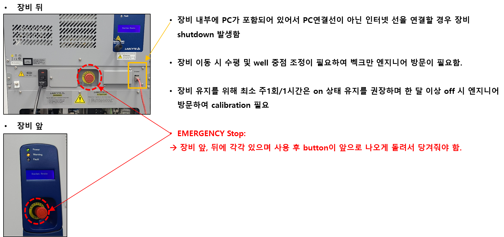
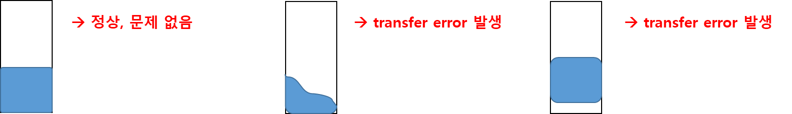

4 Nanoliter liquid handler
5 장비: Echo525
5.1 장비소개
로봇암과 연계된 Nanoliter liquid handler
Drops 형태로 transfer 되어 별도의 disposable tip 없이 사용 가능함
Acoustic liquid dispenser
For aqueous-based acoustic transfers
transfer 속도: Average 300 drops/sec
trasnfer volume: 25 nL drop volume, <8% CV
사용가능한 labware: 96 well plate/384 well plate/1536 well plate
Flexible and Reliable Transfer of Genomic Reagents
Application:
- PCR and qPCR reagents, synthetic biology reagents, NGS reagents, primers and probes, cell culture media, proteins, nucleic acids, up to 50 % glycerol, serum, plasma, and antibodies
5.2 메뉴얼 파일 위치
- share:\19_Equipment
5.3 사용법
5.3.1 자주 묻는 질문들
- Q. 사용 가능한 labware는?
- Source Plate는 전용 plate만 사용 가능하며 dispensing plate 는 128.0 mm X 8.0 mm 의 hard-shell type 을 만족하면 well 수에 관계 없이 모두 가능합니다. (96 well, 384 well, 1536 well, black plate, PCR plate, assay plate 등등)
- Q. Dispensing volume 은 어떻게 되나요?
- 1회 분주 시 최소 25 nL 에서 최대 500 nl 까지 가능합니다.
- 동일한 reagent 를 10 uL 분주하고 싶을 경우 500 * 20회 로 설정하여 사용.
- 최대 볼륨은 plate의 bottom 형태, well 크기 등에 따라 달라질 수 있습니다. (96 well PCR plate-V bottom, 50 ul)
- Q. 어떤 용액이 사용 가능한가요?
- Cell을 제외한 모든 액체 형태는 가능하나 일부 특이 시료의 경우 테스트가 필요할 수 있습니다.
- Q. 사용을 위한 소모품은?
- 음파를 이용한 전달 방식으로 tip과 같은 별도의 소모품이 필요하지 않습니다.
- Source plate와 Destination plate, reagent만 있으면 384개의 시료를 3분 내에 dispensing 할 수 있습니다.
5.3.2 실제구동예시

5.3.3 사용 전 체크사항
5.3.3.1 1. 장비 준비사항
5.3.3.2 2. 특별 주의사항

5.3.3.3 3. 유지보수 항목
DW/Air line 관련 tubing 들은 소모품으로 분류되며 연 1회 교체를 권장하는 항목임. (
- 참고) Maintenance 의뢰 시 기기 가격의 10%로 측정될 수 있음
Air pump와 air tubing에는 필터가 없어 주변 환경의 먼지가 많이 발생할 경우 노즐 막힘 현상이 발생할 수 있음.
- 교체 없이 먼지 제거로 해결 가능하며 평균적으로 연 1회 tubing 교체 시 체크되는 항목이나 특수 상황에 의해 먼지가 많은 경우 짧은 시간 내에 막힐 수 있음
5.3.3.4 4. Warning 상태알림
5.3.4 Source plate 준비
5.3.4.1 1. Liquid bubble 제거: Centrifuge (권장)
- Echo 사용 시 liquid를 넣어준 well에 bubble이 있을 경우 transfer error 발생. Plate centrifuge 를 통해 1) bubble 제거 및 2)well에 담긴 reagent 의 높이 평탄화 후 사용
- Centrifuge 조건: 1500xg, 3 min (2700 rpm, 3 min)

5.3.4.2 2. Plate 정리: deionize
S/W를 통한 정리
Echo가 plate를 한 번 체크하면서 정리해주는 기능을 함
5.3.4.3 3. Liquid volume check
- 정확하진 않지만 well 에 담아져 있는 volume을 확인할 수 있음
5.3.4.4 4. Transfer Calibration
사용하고자 하는 reagent에 따라 적용해야하는 source plate와 음파 값이 다를 수 있음
transfer 전 테스트를 통해 확인하는 것을 권장함
예시)
5.3.5 Software 사용법 및 설정
5.3.5.1 1. 장비연결
5.3.5.2 2. Starting a New Protocol
5.3.5.3 3. Mapping
5.3.5.4 4. Plate설정
5.3.5.5 5. Protocol setting
5.3.5.6 6. Calibration Selection using 384PP (PPP-0200) Source Plate
5.3.5.7 7. Appendix
5.3.5.8 8. Dispense Simulate

5.3.6 Excel file을 이용한 mapping 방법
- Source well과 Destination well을 엑셀파일로 작성해서 import 할 경우 더 빠르게 활용 가능
5.3.6.1 Import Region Definitions (.csv 불러오기)
5.3.7 Echo525 Labware
- gripper 사용으로 인해 PP와 같이 딱딱한 경도의 plate만 사용 가능함
5.3.7.1 1. Source plate
5.3.7.2 2. Destination Plate

5.3.7.3 3. MicroClime Environmental Lids
Microplate well 사용 시 증발을 막아주는 lid

5.3.8 Transfer Error Definitions
5.3.8.1 1. Plate Loading

5.3.8.2 2. Survery - Fluid Determination

5.3.8.3 3. Fluid Transfer